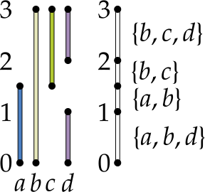

Extrusion is a commonly used technique in GIS to construct simple 3D models. Starting from a planar partition of polygons and a height interval associated to each of them, it generates a set of space-partitioning box-shaped polyhedra by considering that each polygon exists all along its related interval. For instance, a set of building footprints and associated heights is extruded into a set of simple prismatic buildings. Based on the fundamental operations on generalised and combinatorial maps discussed in Chapter 5, this chapter presents a generalisation of this technique to higher dimensions: an \((n-1)\)-dimensional cell complex and a set of associated intervals per \((n-1)\)-cell is thus transformed into an \(n\)-dimensional cell complex.
The chapter starts by presenting some background on 2D-to-3D extrusion and an intuitive description of dimension-independent extrusion in §6.1. Afterwards, §6.2 describes an dimension-independent extrusion algorithm. §6.3 describes how this algorithm was implemented based on the implementation of combinatorial maps in CGAL. §6.4 summarises experiments using this implementation, which created consistent objects in up to 6D by combining publicly available GIS datasets. §6.5 describes how extrusion can be used not only directly, but as a base to create dimension-independent generalisation operations. Finally, §6.6 concludes the chapter with the main findings and the possibilities to use extrusion for higher-dimensional datasets.
Most of this chapter is based on the paper:
{% imbiber pubs/phd.bib one:15ijgis_extrusion noimg %}
6.1 Background
Extrusion is most commonly used in GIS92 in order to create simple 3D city models with box-shaped buildings. In such a process, a user takes a set of building footprints, optionally subdivided into parts of similar height, and extrudes them using intervals that extend from the ground level to the building height at the location of each polygon. This process thus creates simple 3D representations of each building, where a building is represented by one or more box-shaped polyhedra. Figure 6.1 shows an example of such a model over a triangulated terrain (i.e. a 2D simplicial complex embedded in 3D).
Such an extrusion process is appealing largely because of its simplicity. All the information that is required for the previous example is notoriously easy to obtain: building footprints are widely available—including in open datasets such as OpenStreetMap94—or can be easily obtained from satellite imagery, while the height information can be acquired with techniques like airborne laser scanning or photogrammetry. Not coincidentally, this type of 3D models are commonly generated in practice and often appear in standards such as CityGML [Gröger et al., 2012], where it is defined as the level of detail (LOD) 1.
Moreover, it is easy to ensure that extruded models are generated in a topologically consistent manner [Ledoux and Meijers, 2011]. If the input forms a planar partition—or is processed to form a planar partition, e.g. using the method described in §10.2—and the extrusion direction is orthogonal to the planar partition, the output polyhedra are guaranteed not to overlap.
While not every possible 3D shape can be generated using extrusion—the top and bottom faces will always be horizontal, and the side faces connecting them will always be vertical—, a remarkable number of shapes can be constructed using this type of method [Ferrucci, 1993]. This is especially true when simple extensions to the method are considered, such as multiple intervals per 2-cell, possibly overlapping 2-cells in the input, or an arbitrary extrusion direction.
Viewed at a more fundamental level, shown in Figure 6.2, extrusion ‘lifts’ a 2D cell complex to form a 3D cell complex. In order to form a valid cell complex as defined in §2.3.2, cells must not overlap, but instead they should form a structure of cells of dimension from 0 to 3, where \(i\)-cells (\(\forall i > 0\)) are bounded by sets of \((i-1)\)-cells. The extruded cells must therefore take into account the incidence and adjacency relationships between cells, splitting cells of every dimension at the places where the common boundaries of higher-dimensional cells start and end.

(a)

(b)
Figure 6.2: (a) A 2D cell complex, where each 2-cell is associated with a height, is extruded to generate (b) a 3D cell complex. Note how the extrusion of vertex \(v\) in (a) causes the generation of several vertices and edges. In particular, the vertex \(v^\prime\) in (b), which is at the height of the top face of the back left polyhedron. This vertex needs to be used in the representation of the all 4 edges, 5 faces and 3 volumes that are incident to it, not only in those that are part of the back left polyhedron. This ensures that the cells in (b) are pairwise disjoint and have the expected correct topology.↩
Extrusion, in the sense of its GIS definition as exposed in the previous paragraph, has a natural extension to higher dimensions. A dimension-independent extrusion operation thus ‘lifts’ an \((n-1)\)-dimensional cell complex, to an \(n\)-dimensional cell complex by assigning one or more intervals to each \((n-1)\)-cell, i.e. a subset of 1D Euclidean space95, along which this cell is defined. For instance, just as a polygon representing the footprint of a building is commonly extruded using an interval \((0, height)\), a polyhedron representing a building can be extruded along the time interval \((construction, destruction)\). As Figure 6.3 shows, extrusion using multiple unconnected intervals is also a possible use case.
In the related literature, there are two methods that can be used for a similar purpose. The Cartesian product, a more general operation defined for generalised maps in Lienhardt et al. [2004], generates a combinatorial structure equivalent to the extrusion of all the objects along a single interval by computing the Cartesian product of the original (unextruded) cell complex with an edge. However, since such an operation is limited to a single interval (which is the same for all the input objects), the output cannot be directly applied for modelling real-world datasets. A related possibility, presented by Ferrucci [1993], is to first pre-process all the intervals (for all cells), splitting them into fragments at the other intervals’ endpoints so that each fragment intersects another one if and only if they have the same endpoints, and then computing the output purely combinatorially for each possible combination of fragment and for each input cell. While this allows us to model real-world objects, the process of splitting the input intervals might greatly increase the number of output cells since two intersecting intervals are split even if their corresponding cells are far away from each other. The method presented in this chapter follows a similar approach, but instead process the input intervals for each input cell separately based on the incidence relationships with other cells, thus generating fewer total intervals, a smaller number of cells and a considerably smaller combinatorial structure.
6.2 A dimension-independent extrusion algorithm
The dimension-independent extrusion algorithm requires two input arguments: an \((n-1)\)-dimensional space partition of \((n-1)\)-polytopes embedded into \((n-1)\)-dimensional space, stored as an \((n-1)\)-dimensional generalised map \(G\); and a map of extrusion intervals \(\rho\)96 that links each \((n-1)\)-cell \(c\) in \(G\) to a set \(R\) of 1-dimensional intervals, where every interval \(r\) in \(R\) is represented as a pair of values \((r_{\min}, r_{\max})\) where \(c\) is extruded along the \(n\)-th dimension. The intervals in \(\rho\) for the cells of lower dimension do not need to be given, since they can be computed by the algorithm based on their incidence relationships to the \((n-1)\)-cells. Note that, as Figure 6.4 shows, multiple intervals for the same cell are possible.
(a)

(b)
Figure 6.4: All the cells are given extrusion intervals based on the intervals for the \((n-1)\)-cells. Note how it is possible to have multiple intervals per cell both in the input, e.g. the purple square on the right is extruded along two intervals, and in the output, e.g. the two edges \(v^{(0,1)}\), \(v^{(1.5,2)}\) and \(v^{(2,3)}\) are the result of the extrusion of a single vertex \(v\) whose extrusion interval was not directly given.↩
There are two cases in which a cell has multiple intervals. One of these is that for an \((n-1)\)-dimensional cell, multiple intervals may be explicitly provided in the input (e.g. the example previously given in Figure 6.3). The other case is that for a lower-dimensional cell, multiple extrusion intervals may be passed to it by several adjacent higher-dimensional cells.
The result of the extrusion algorithm is an \(n\)-dimensional generalised map \(G^{\prime}\) representing a \(n\)-dimensional cell complex containing a set of prismatic \(n\)-polytopes, the \(n\)-dimensional analogue of a set of prisms, which also form a \(n\)-dimensional space partition. It is important to note that the output map \(G^\prime\) creates entirely new structures, i.e. it does not reuse the darts or embeddings of \(G\), since the \((n-1)\)-simplices in \(G\) are similar but not identical to the \(n\)-simplices in the base of \(G^\prime\). These differ in terms of the highest-dimensional involution \(\alpha_{n-1}\) and—importantly for an implementation—in the total number of involutions per dart.
As Figures 6.5 and 6.6 show, the cells in the new \(n\)-dimensional cell complex in \(G^\prime\) have a direct relation to and can be expressed in terms of the \((n-1)\)-cells in \(G\) and their extrusion intervals in \(\rho\). This property is used in order to define the cells of the output cell complex, which are equivalent to the embeddings in \(G^\prime\). These consist of:
- ‘Base’ and ‘top’ \((n-1)\)-cells (i.e. facets), which are constructed from every \((n-1)\)-cell \(c\) in \(G\) at the \(r_{\min}\) and \(r_{\max}\) end points of every interval in \(\rho(c)\).
- A series of prismatic facets linking corresponding \((n-2)\)-cells (i.e. ridges) \(c\) of the above mentioned \(r_{\min}\) and \(r_{\max}\) facets for every interval, such that every one of these facets corresponds to the extrusion of the ridge along an interval in \(\rho(c)\).
(a)
(b)
Figure 6.5: Extruding the embeddings of an \(i\)-cell \(c\) along a single interval \(r = (a,b)\) such that \(a,b \in \mathbb{R}, a \neq b\), generates the embeddings of three cells: two \(i\)-cells \(c^{a}\) and \(c^{b}\), and an \((i+1)\)-cell \(c^{r} = c^{(a,b)}\) lying between them.↩
(a)
(b)
Figure 6.6: Extruding a 2D cell complex using an interval that is defined per 2-cell. The facet \(f_0\) is to be extruded along the interval \(r_0 = (a,c)\) and \(f_1\) along \(r_1 = (a,b)\). Note how the vertices and edges incident to multiple facets in the input are extruded along the intervals of these facets, generating a series of cells connecting the end points of their intervals.↩
For the combinatorial structure, the algorithm takes advantage of the fact that the darts in the generalised map \(G\) can be extruded largely independently based on querying the combinatorial structure of \(G\) and simple 1D geometric queries along the \(n\)-th dimension. Intuitively, the extrusion of a single \((n-1)\)-simplex in \(G\) consists of layers of \(n\)-simplices that are ‘stacked’ so as to form one part of the prism-shaped output. Each new layer corresponds to a new \(n\)-simplex that shares all but one of the nodes with the \(n\)-simplex below it.
The extrusion algorithm is thus divided into three parts that are performed sequentially and explained in detail in the following sections: (1) propagating the input intervals to all the cells in the input cell complex, (2) generating the new embeddings (i.e. the attributes and geometry) for each input cell, and (3) generating the combinatorial structure (i.e. the darts and involutions) and linking each dart to its correct embeddings for every dimension.
6.2.1 Propagating the extrusion intervals to all cells
While the extrusion intervals are defined only for the \((n-1)\)-cells, the cells of every dimension need to be extruded, and therefore the extrusion intervals need to be propagated from the \((n-1)\)-cells to the cells of lower dimension. This is done recursively in decreasing dimension, using the incidence relationships between every \(i\)-cell and the \((i-1)\)-cells on its boundary to pass the intervals of the former to the latter, using the same map of extrusion intervals \(\rho\). Because incidence is a transitive relation, an interval attached to a particular lower dimensional cell thus indicates that it is incident to an \((n-1)\)-cell that will be extruded along that interval.
As \((i-1)\)-cells can be on the boundary of multiple \(i\)-cells, several intersecting intervals can be passed to the map of extrusion intervals of a lower dimensional cell. In order to generate non-intersecting cells, these need to be split into a set of non-intersecting intervals as shown in Figure 6.7, each of which will represent the incidence of this cell to an equal set of higher-dimensional cells along the entirety of the interval. A sketch of a simple process to do this is shown in Algorithm 1, which assumes that the sets of intervals are kept sorted. Note that this is essentially a one dimensional analogue of other operations used in GIS, e.g. vector map overlays [de Berg et al., 1998, §2.3] and time-composites in spatio-temporal modelling [Langran and Chrisman, 1988].
| Algorithm 1: PropagateRanges | |
| Input: | generalised map \(G\) of the input cell complex, |
| map \(\rho\) with the extrusion intervals of the \((n-1)\)-cells in \(G\) | |
| Output: | map \(\rho\) with the extrusion intervals of all the cells in \(G\) |
| 1 | for \(i \leftarrow n-1\) to \(0\) do | |||||
| 2 | foreach \(i\)-cell \(c\) in \(G\) do | |||||
| 3 | foreach \((i-1)\)-cell \(b\) on the boundary of \(c\) do | |||||
| 4 | foreach extrusion interval \(r = (r_{\min}, r_{\max}) \in \rho(c)\) do | |||||
| 5 | Find the intervals \(R^\prime \subseteq \rho(b)\) whose interiors intersect with \(r\) | |||||
| 6 | if \(r_{\min}\) is in the interior of an interval \(r^\prime = (r_{\min}^\prime, r_{\max}^\prime) \in R^\prime\) then | |||||
| 7 | Remove \(r^\prime\) from \(\rho(b)\) | |||||
| 8 | Add \((r_{\min}^\prime, r_{\min})\) to \(\rho(b)\) | |||||
| 9 | Add \((r_{\min}, r_{\max}^\prime)\) to \(\rho(b)\) | |||||
| 10 | if \(r_{\min}\) is outside all intervals in \(R^\prime\) then | |||||
| 11 | Add a new interval in \(R^\prime\) from \(r_{\min}\) to the minimum of the lowest interval in \(R^\prime\) | |||||
| 12 | if \(r_{\max}\) is in the interior of an interval \(r^\prime = (r_{\min}^\prime, r_{\max}^\prime) \in R^\prime\) then | |||||
| 13 | Remove \(r^\prime\) from \(\rho(b)\) | |||||
| 14 | Add \((r_{\min}^\prime, r_{\max})\) to \(\rho(b)\) | |||||
| 15 | Add \((r_{\max}, r_{\max}^\prime)\) to \(\rho(b)\) | |||||
| 16 | if \(r_{\max}\) is outside all intervals in \(R^\prime\) then | |||||
| 17 | Add a new interval in \(R^\prime\) from the maximum of the highest interval in \(R^\prime\) to \(r_{\max}\) | |||||
| 18 | foreach empty interval \((r_{\min}^\prime, r_{\max}^\prime)\) between consecutive intervals in \(R^\prime\) do | |||||
| 19 | Add \((r_{\min}^\prime, r_{\max}^\prime)\) to \(\rho(b)\) | |||||
Considering what happens when a single new interval is passed to a cell in the incremental process shown in Algorithm 1, the total number of intervals of that cell can increase from \(j\) to \(2j+1\) in the worst case, which happens when the new interval starts before and ends after all other intervals and these are all not contiguous (i.e. they are all separated by empty intervals). However, when taking into account \(r\) intervals passed to the same cell, the total number of intervals for the cell can only increase to \(2r-1\). As each extrusion interval is bounded by two values, \(r\) intervals lead to at most \(2r\) boundary values and thus the number of intervals cannot be higher than \(2r-1\).
Assuming that a new interval can be added to a cell in \(O(\log r)\) time, e.g. by maintaining a sorted list or an augmented red-black tree with the endpoints of the intervals, the total time to construct the ordered set of all intervals for a cell \(c\) is \(O(r \log r)\), where \(r\) is the number of intervals that are passed onto \(c\). The overall computational complexity of this step depends on the incidence relationships between the cells in the complex.
6.2.2 Generating the new embeddings
Intuitively, when a single \(i\)-cell is extruded along a single interval \(r = (r_{\min}, r_{\max})\), three new cells are generated: two \(i\)-cells that correspond to the end points of the interval \(r_{\min}\) and \(r_{\max}\), and a prismatic \((i+1)\)-cell along all of \(r\), i.e. lying between the two \(i\)-cells. For instance, extruding a polygon results in ‘top’ and ‘bottom’ polygonal faces and a polyhedron that lies between the two polygons.
Analogously, considering the embedding structures that store the necessary attributes for each cell, such that an \(i\)-dimensional embedding (\(i\)-embedding) structure keeps the attributes of an \(i\)-cell, extruding an \(i\)-dimensional embedding results in two \(i\)-embeddings and one \((i+1)\)-embedding. In the case of linear geometries, extruding a point entails the creation of two additional points, one with an appended \(r_{\min}\) coordinate, and one with an \(r_{\max}\) one.
With multiple intervals, this same procedure can then be used by applying it per embedding and per interval. Notice that some embeddings are shared by multiple intervals (when the minimum of an interval is equal to the maximum of another), but these only need to be created once.
The extrusion algorithm for the embeddings receives the set of input embeddings \(E\) and the map of extruded intervals \(\rho\) which, being the output of PropagateRanges (Algorithm 1), now contains a set of non-intersecting intervals for the cells of every dimension, and it returns an entirely new set of extruded embeddings \(E^{\prime}\), as well a function \(ex(e, v) \rightarrow E^\prime\) linking an input embedding \(e \in E\) and an interval or end point of an interval \(v\) to an extruded (output) embedding \(e^{\prime} \in E^{\prime}\). For instance, given an interval \(r = (r_{\min}, r_{\max}) \in \rho(e)\), \(v\) can be \(r\), \(r_{\min}\) or \(r_{\max}\), reflecting the fact that extruding an \(i\)-embedding results in two \(i\)-embeddings (respectively for \(r_{\min}\) and \(r_{\max}\)) and one \((i+1)\)-embedding (for \(r\)).
The general procedure to generate the new embeddings and their relation to the old embeddings and the intervals is shown in Algorithm 2. Note that a practical implementation of this algorithm has to deal with the desired attributes for each of the extruded cells rather than simply making a copy of the input ones (lines 4, 6 and 10) and appending one more coordinate to the 0-embeddings (lines 6 and 12).
| Algorithm 2: EmbeddingsExtrusion | |
| Input: | set \(E\) of the embeddings in the input cell complex, |
| map \(\rho\) of the extrusion intervals for all cells of the input complex | |
| Output: | set \(E^\prime\) of the embeddings for the output cell complex, |
| map \(ex\) that links an input embedding to its extruded embeddings | |
| 1 | foreach \(e \in E\) do | ||||
| 2 | foreach \(r = (r_{\min}, r_{\max}) \in \rho(e)\) do | ||||
| 3 | if \(ex(e, r_{\min}) = \emptyset\) then | ||||
| 4 | \(ex(e, r_{\min}) \leftarrow e\) | ||||
| 5 | if \(e.dimension = 0\) then | ||||
| 6 | Append \(r_{\min}\) to the coordinates of \(ex(e, r_{\min})\) | ||||
| 7 | \(ex(e, r) \leftarrow e\) | ||||
| 8 | \(ex(e, r).dimension \leftarrow ex(e, r).dimension+1\) | ||||
| 9 | if \(ex(e, r_{\max}) = \emptyset\) then | ||||
| 10 | \(ex(e, r_{\max}) \leftarrow e\) | ||||
| 11 | if \(e.dimension = 0\) then | ||||
| 12 | Append \(r_{\max}\) to the coordinates of \(ex(e, r_{\max})\) | ||||
| 13 | Put \(ex(e, r_{\min}), ex(e, r)\) and \(ex(e, r_{\max})\) in \(E^{\prime}\) | ||||
Since this part of the algorithm iterates through all the cells in the input cell complex, and it generates at most three new embeddings per interval for each cell, the computational complexity can be \(O(rn)\) per cell, where \(r\) is the total number of intervals and \(n\) is the dimension, i.e. as long as the map \(ex\) can be queried and the new embeddings can be created in time that is linear on the dimension (which in practice is a relatively small constant).
6.2.3 Generating the new combinatorial structure and linking it to its correct embeddings
The extrusion of a single dart in the input map \(G\) along a single interval \(r = (r_{\min}, r_{\max})\) generates a series of connected darts in \(G^\prime\) connected by a sequence of involutions \(\alpha_{n-1}, \alpha_{n-2}, \ldots, \alpha_{1}, \alpha_{0}, \alpha_{1}, \ldots, \alpha_{n-2}, \alpha_{n-1}\). Intuitively, these are equivalent to stacked \(n\)-simplices that together form a prism97. Figure 6.8 shows a simple extrusion of the cell complex from Figure 6.5 including all its darts.
(a)
(b)
Figure 6.8: The darts in the cell complexes in Figure 6.5. Note that one can obtain a dart’s representation as a simplex by considering additional nodes at its corresponding facet and one in the interior of the volume.↩
Since two darts connected by an \(\alpha_i\) involution share all but the \(i\)-th node, and the \(i\)-th node in a generalised map means that a dart belongs to a certain \(i\)-cell98, this series of darts represents a succession of simplices that progressively change from the cells at the ‘base’ (at \(r_{\min}\)) to those at the ‘side’ (at the interval \((r_{\min}, r_{\max})\)) to those at the ‘top’ (at \(r_{\max}\)). This can be more clearly seen in Figure 6.9. As the pattern that is followed in each stack of darts in \(G^\prime\) is the same for all the darts in \(G\), assuming that their extrusion intervals are the same, they can also be expressed in terms of the dart in \(G\) being extruded and their position in the stack. The darts at a certain level in the stack are thus called a layer, and various functions will map an input dart in \(G\) to the equivalent dart at a specific layer in \(G^\prime\).
An intuitive justification for this is that if one considers the darts in the base and top facets in the extrusion of a cell \(e\) along a single interval \(r = (r_{\min}, r_{\max})\), these belong to different cells of every dimension except for their \(n\)-cell—which is \(ex(e, r)\). Considering a function \(e_i: D \rightarrow E\) that links a dart \(d \in D\) to its \(i\)-embedding in \(E\), for every dimension \(i < n\), the darts of the base facet belong to the extruded \(ex\left(e_i\left(d\right), r_{\min}\right)\) cells, while the top darts belong to the extruded \(ex\left(e_i\left(d\right), r_{\max}\right)\) cells. The darts of the faces on the sides, which connect corresponding ridges of the base and top, belong instead to a mixture of cells in \(ex\left(e_i\left(d\right), r_{\min}\right)\), \(ex\left(e_i\left(d\right), r_{\max}\right)\) and \(ex\left(e_i\left(d\right), r\right)\). The darts closer to the base face belong to cells in \(ex\left(e_i\left(d\right), r_{\min}\right)\) and \(ex\left(e_i\left(d\right), r\right)\), while those closer to the top belong to cells in \(ex\left(e_i\left(d\right), r_{\max}\right)\) and \(ex\left(e_i\left(d\right), r\right)\). This is natural when one considers that \(\alpha_i\)-linked darts differ only in one of their cells (i.e. the \(i\)-cells), all other cells being the same for both darts. This means that there must be a natural progression of layers of darts: starting from the base, they change their cells one by one from \(ex\left(e_i\left(d\right), r_{\min}\right)\) to \(ex\left(e_i\left(d\right), r\right)\) from the highest dimension down, and then change their cells one by one from \(ex\left(e_i\left(d\right), r\right)\) to \(ex\left(e_i\left(d\right), r_{\max}\right)\) from the lowest dimension up until reaching the top.
The algorithm to generate the extruded combinatorial structure therefore works by generating layers of darts that follow a pattern based on the darts in the input cell complex, starting from those for the base face, moving on to the \(2n-2\) layers for the side faces, and finishing with the top face. The output darts and the involutions between them are expressed in terms of the input generalised map \(G\). For this, a function \(cur: G \rightarrow G^\prime\) maps a dart in \(G\) to the corresponding dart in the currently being generated layer of the output map \(G^\prime\). Note that this means that the algorithm needs to keep track of only two layers of darts at any given time, one in \(G\) and one in \(G^\prime\), each of which has at most the number of darts in the input map. This bounds the memory usage of this part of the algorithm, which is therefore on the order of \(O(d)\), with \(d\) the number of darts in the input space partition.
As shown by Ferrucci [1993], when multiple intervals are involved this procedure can simply be repeated for all intervals, assuming that these have all been subdivided so as not to intersect one another. However, it is possible to greatly reduce the number of darts generated by skipping the creation of some of the darts. This is possible because the extrusion intervals have been independently propagated to each cell of every dimension. Based on the algorithm, the lower-dimensional cells in the complex have received all the intervals from their incident higher-dimensional cells so that the intervals in the lower-dimensional cells contain all the endpoints of the intervals of their incidences. However, the same is not true in the opposite direction: the intervals for the higher-dimensional cells have not been subdivided so as to contain all the ones of their incident lower-dimensional cells. Nevertheless, as Figure 6.10 shows, even when an extrusion interval that would be used by the pattern described above is not in a cell, it is possible to map it to a bigger interval that contains it. If one considers the darts that would be generated using the above mentioned approach for all the non-intersecting intervals in the cell complex, but at the same time mapping the non-existent extrusion intervals to their immediately bigger containing ones, this can result in many darts that are equivalent (i.e. they have nodes at the same cells). These darts are those that can be skipped during the extrusion process.
(a)
(b)
Figure 6.10: The darts in the cell complexes in Figure 6.10. Note that the darts of the right cube in (b), when viewed as individual stacks, are similar to the ones in Figures 6.8 and 6.9. The darts of the left box are however different: those on the left all involve an extrusion along the interval \((a,c)\) due to the fact that there is no vertex, edge or facet extruded to \(b\). On the other hand, those in the right do have a vertex and an edge at \(b\), but not a facet and still belong to the same volume.↩
Therefore, in order to generate the darts for all intervals of all cells, this procedure is repeated for all the intervals in \(\rho\), after making them non-intersecting using the same procedure delineated in §6.2.1, and skipping all the darts that would be equivalent to those that have already been created. This is done using a sweep-hyperplane-like algorithm that generates up to \(n\) layers of darts at the events at the beginning or end of an interval, creating darts only when the sweep-hyperplane99 passes by the beginning or end of their extrusion intervals (i.e. not while it is in their interior). The darts are linked to their appropriate embedding according to the same pattern. The complete procedure to generate the combinatorial structure is presented in Algorithm 3, which uses the Algorithm 4 when the sweep hyperplane passes by the beginning of an interval and the similar Algorithm 5 when the sweep hyperplane by the end of one. If an input dart is denoted as \(d\), its corresponding dart in the currently being generated layer of the output is denoted as \(cur(d)\), the dart linked to \(d\) by an \(i\)-involution as \(\alpha_{i}(d)\), and the \(i\)-embedding of \(d\) as \(e_{i}(d)\).
| Algorithm 3: GMapExtrusion | |
| Input: | generalised map \(G\) of the input cell complex, |
| set \(E\) of the embeddings in the input cell complex, | |
| set \(E^\prime\) of the embeddings for the output cell complex, | |
| map \(\rho\) of the extrusion intervals for all cells of the input complex, | |
| map \(ex\) that links an input embedding to its extruded embeddings | |
| Output: | generalised map \(G^\prime\) of the output cell complex |
| 1 | Compute an ordered set of non-intersecting intervals \(r_{all}\) using all the intervals for all cells in \(\rho\) | ||
| 2 | Consider a sweep plane that passes through all the intervals \(r_{all}\) in increasing order along dimension \(n\) | ||
| 3 | if the sweep plane passes by the beginning of an interval \(r = (r_{\min}, r_{\max}) \in r_{all}\) then | ||
| 4 | for \(i \leftarrow n\) to \(0\) do | ||
| 5 | GMapLayerBegin\((G, G^{\prime}, i, E, E^{\prime}, \rho, r, ex)\) | ||
| 6 | if the sweep plane passes by the end of an interval \(r = (r_{\min}, r_{\max}) \in r_{all}\) then | ||
| 7 | for \(i \leftarrow n\) to \(0\) do | ||
| 8 | GMapLayerEnd\((G, G^{\prime}, i, E, E^{\prime}, \rho, r, ex)\) | ||
| Algorithm 4: GMapLayerBegin | |
| Input: | generalised map \(G\) of the input cell complex, |
| generalised map \(G^\prime\) of the output cell complex, | |
| dimension \(i\) of the current layer, | |
| set \(E\) of the embeddings in the input cell complex, | |
| set \(E^\prime\) of the embeddings of the output cell complex, | |
| map \(\rho\) of the extrusion intervals of all cells of the input complex, | |
| current interval \(r\), | |
| map \(ex\) that links an input embedding to its extruded embeddings | |
| Output: | generalised map \(G^\prime\) of the output cell complex |
| 1 | foreach dart \(d\) in \(G\) do | ||||
| 2 | if \(\exists r^\prime \in \rho(e_{n-1}(d)) \mid r \subseteq r^\prime\) then | ||||
| 3 | if \(\exists r^{\prime\prime} \in \rho(e_{i}(d)) \mid r_{\min}^{\prime\prime} = r_{\min}\) then | ||||
| 4 | \(last \leftarrow cur(d)\) | ||||
| 5 | \(cur(d) \leftarrow\) new dart | ||||
| 6 | Put \(cur(d)\) in \(G^{\prime}\) | ||||
| 7 | \(\alpha_{i+1}(cur(d)) \leftarrow last\) | ||||
| 8 | \(\alpha_{i+1}(last) \leftarrow cur(d)\) | ||||
| 9 | foreach dart \(d\) in \(G\) do | ||||
| 10 | if \(\exists r^\prime \in \rho(e_{n-1}(d)) \mid r \subseteq r^\prime\) then | ||||
| 11 | if \(\exists r^{\prime\prime} \in \rho(e_{i}(d)) \mid r_{\min}^{\prime\prime} = r_{\min}\) then | ||||
| 12 | for \(inv \leftarrow 0\) to \(i-1\) do | ||||
| 13 | \(\alpha_{inv}^{\prime}(cur(d)) \leftarrow cur(\alpha_{inv}(d))\) | ||||
| 14 | \(\alpha_{inv}^{\prime}(cur(\alpha_{inv}(d))) \leftarrow cur(d)\) | ||||
| 15 | for \(inv \leftarrow i+2\) to \(n\) do | ||||
| 16 | \(\alpha_{inv}^{\prime}(cur(d)) \leftarrow cur(\alpha_{inv-1}(d))\) | ||||
| 17 | \(\alpha_{inv}^{\prime}(cur(\alpha_{inv-1}(d))) \leftarrow cur(d)\) | ||||
| 18 | for \(emb \leftarrow 0\) to \(i\) do | ||||
| 19 | \(e_{emb}^{\prime}(cur(d)) \leftarrow ex(e_{emb}(d), r_{\min})\) | ||||
| 20 | for \(emb \leftarrow i+1\) to \(n\) do | ||||
| 21 | \(e_{emb}^{\prime}(cur(d)) \leftarrow ex(e_{emb-1}(d), r)\) | ||||
| Algorithm 5: GMapLayerEnd | |
| Input: | generalised map \(G\) of the input cell complex, |
| generalised map \(G^\prime\) of the output cell complex, | |
| dimension \(i\) of the current layer, | |
| set \(E\) of the embeddings in the input cell complex, | |
| set \(E^\prime\) of the embeddings of the output cell complex, | |
| map \(\rho\) of the extrusion intervals of all cells of the input complex, | |
| current interval \(r\), | |
| map \(ex\) that links an input embedding to its extruded embeddings | |
| Output: | generalised map \(G^\prime\) of the output cell complex |
| 1 | foreach dart \(d\) in \(G\) do | ||||
| 2 | if \(\exists r^\prime \in \rho(e_{n-1}(d)) \mid r \subseteq r^\prime\) then | ||||
| 3 | if \(\exists r^{\prime\prime} \in \rho(e_{i}(d)) \mid r_{\max}^{\prime\prime} = r_{\max}\) then | ||||
| 4 | \(last \leftarrow cur(d)\) | ||||
| 5 | \(cur(d) \leftarrow\) new dart | ||||
| 6 | Put \(cur(d)\) in \(G^{\prime}\) | ||||
| 7 | \(\alpha_{i}(cur(d)) \leftarrow last\) | ||||
| 8 | \(\alpha_{i}(last) \leftarrow cur(d)\) | ||||
| 9 | foreach dart \(d\) in \(G\) do | ||||
| 10 | if \(\exists r^\prime \in \rho(e_{n-1}(d)) \mid r \subseteq r^\prime\) then | ||||
| 11 | if \(\exists r^{\prime\prime} \in \rho(e_{i}(d)) \mid r_{\max}^{\prime\prime} = r_{\max}\) then | ||||
| 12 | for \(inv \leftarrow 0\) to \(i-1\) do | ||||
| 13 | \(\alpha_{inv}^{\prime}(cur(d)) \leftarrow cur(\alpha_{inv}(d))\) | ||||
| 14 | \(\alpha_{inv}^{\prime}(cur(\alpha_{inv}(d))) \leftarrow cur(d)\) | ||||
| 15 | for \(inv \leftarrow i+2\) to \(n\) do | ||||
| 16 | \(\alpha_{inv}^{\prime}(cur(d)) \leftarrow cur(\alpha_{inv-1}(d))\) | ||||
| 17 | \(\alpha_{inv}^{\prime}(cur(\alpha_{inv-1}(d))) \leftarrow cur(d)\) | ||||
| 18 | for \(emb \leftarrow 0\) to \(i\) do | ||||
| 19 | \(e_{emb}^{\prime}(cur(d)) \leftarrow ex(e_{emb}(d), r_{\max})\) | ||||
| 20 | for \(emb \leftarrow i+1\) to \(n\) do | ||||
| 21 | \(e_{emb}^{\prime}(cur(d)) \leftarrow ex(e_{emb-1}(d), r)\) | ||||
For the latter two algorithms, lines 1–8 show the generation of a new layer of darts and its linking to the previous one, lines 12–17 show how the darts within the layer are linked based on the pattern of the input map, and lines 18–21 show how the darts within the layer are related to their correct embeddings, which are also patterned after the embeddings in the input.
Notice that this method generates layers of darts in a grid-like fashion, each layer containing at most the number of darts in the input map, and calling GMapLayerBegin and GMapLayerEnd to create at most \(2n\) layers per non-intersecting interval. The time complexity of computing the set of non-intersecting intervals in Algorithm 1 is \(O(r \log r)\) as before, while the number of darts in the output map is bounded by \(O(ndr)\), where \(n\) is the extrusion dimension, \(d\) is the total number of darts in the input map and \(r\) is the total number of intervals in the input.
6.3 Implementation
The extrusion algorithm has been implemented in C++11 and made available under the open source MIT licence at https://github.com/kenohori/lcc-tools. It requires and builds upon the CGAL packages Combinatorial Maps and Linear Cell Complex, among others. The first package provides data structures and algorithms to store and to efficiently iterate over the darts of a combinatorial map, and the second links the 0-embeddings to other CGAL types in order to store the geometry of a model.
As the algorithm is described on the basis of generalised maps while the CGAL packages instead use combinatorial maps, all operations are done through a small wrapper that converts operations for the former to operations for the latter. Since a combinatorial maps dart is equivalent to two generalised map darts (see §4.3.6), some redundant operations are ignored in the process, such as requests to create darts that already exist or to connect darts that are already connected. These redundant operations are instead used as assertions to verify the validity of the map during its creation.
Both these packages and the implementation of the extrusion algorithm make heavy use of the traits programming technique [Myers, 1995] and recursive templates (TMP or template meta-programming) in order to produce efficient code. These techniques are described in §A.3. One shortcoming of the current prototype implementation is that it uses the C++ type std::map in order to link cells to their extrusion intervals, which offers only logarithmic time access [ISO, 2015, §23.4]100, rather than the constant time that would be possible by integrating this into the templated structures. This would involve storing the set of extrusion intervals of a cell directly in the data structure that is used for its attributes.
In order to input and output data, as well as to visualise the results, the implementation uses the OGR Simple Feature Library101 to read standard GIS data formats. It is also able to output Wavefront OBJ102 files, in which faces or darts can be directly exported for visualisation. In the latter case, darts are exported as triangles with vertices at the two 0-cells of a dart, as well as an added vertex at the centroid of its 2-cell.
6.4 Experiments
The algorithm has been tested by extruding various 2D datasets to higher dimensions. For this, several free and open datasets in the area of Delft are used, matching the geometries in some with the attributes present in others so as to obtain new attributes and appropriate extrusion intervals for each geometry. The tests were performed on a Mac OS X computer with a 2.7 GHz Intel Core 2 Duo processor and 12 GB of RAM. The main characteristics of the datasets tested are shown in Table 6.1.
| Input | Output | time | |||
| Test | darts | cells | darts | cells | time |
| One GBKN building to 5D | 14 | 29 | 80 640 | 783 | 3 s |
| 370 buildings to 4D | 3 268 | 6 065 | 123 184 | 42 552 | 12 s |
| TOP10NL to 3D | 30 098 | 48 562 | 181 640 | 148 102 | 2 m 39 s |
Note however that since the implementation uses an std::map to access the extrusion intervals of each cell, the running time is dominated by the large number of times this query is performed (several times per interval and per cell). The times provided in Table 6.1 are therefore not indicative of the theoretical complexity of the algorithm, which is instead dominated by the generation and linking of the darts in the extruded dataset (§6.2.3). The generation of the non-intersecting intervals for all cells (§6.2.1) and the generation of the extruded embeddings (§6.2.2) always ran in under a second, even for very large datasets.
One test involved the Aula Congress Centre in Delft, a building represented by a single polygon with 14 vertices extracted from the GBKN dataset103, as shown in Figure 6.11. It was extruded from 2D up to 5D using some manually added attributes: its height, construction date and a specified level of detail for the model. Figure 6.12 shows the extruded model at an intermediate stage in this process, in 4D. The end result was a generalised map with 80 640 darts, 112 vertices, 280 edges, 260 facets, 110 volumes, 20 4-cells and 1 5-cell. It was generated in 3 seconds using 15 MB of RAM.
(a)
(b)
(c)
Figure 6.12: The footprint of the Aula Congress Centre (Figure 6.11) extruded twice to create a 4D model. It is shown here in three parts for clarity: (a) the faces in the two end volumes, (b) the lateral faces connecting corresponding vertical edges, and (c) the top and bottom faces connecting corresponding horizontal edges. Not shown here are the 16 different polyhedra that bound the polychoron and which are all bounded by different sets of these faces.↩
Another test, shown in 2D and 3D in Figure 6.13, involved a previously generated dataset of the campus of the Delft University of Technology (see Ledoux and Meijers [2011]), consisting of 2 749 vertices, 2 946 edges, and 370 facets. This dataset, covering 2.3 km\(^{2}\), was originally built from the GBKN dataset by manually forming footprint polygons from the lines in the dataset. Building heights for each polygon were obtained from the AHN dataset104 (airborne laser altimetry), while building dates were obtained from the BAG dataset105. This dataset, including the added attributes, is available together with the source code of the program. It was therefore extruded from its original 2D representation to 4D using building heights for the third dimension and dates for the fourth dimension. The result was a generalised map with 123 184 darts, 8 613 vertices, 17 919 edges, 12 471 facets, 3 310 volumes and 239 4-cells. It was generated in 12 seconds using 46 MB of RAM.
(a)
(b)
(c)
Figure 6.13: Extruding a dataset of the campus of the Delft University of Technology↩
One more test used 1 836 buildings from Delft from the TOP10NL dataset106, which was extruded to 3D using intervals from building dates also obtained from the BAG dataset. The result was a generalised map with 181 640 darts, 46 464 vertices, 71 826 edges, 27 975 facets and 1 837 volumes.
An algorithm was used to verify that the constructed datasets conform to the definition of a combinatorial map107. Additional tests were made to ensure that all the darts of an \(i\)-cell correctly point to it in their \(i\)-embeddings, and to verify that all the darts of an \(n\)-cell are linked to point embeddings within the extrusion interval given for the \(n\)-cell, among other tests. The extruded datasets were also inspected visually in 2D and 3D by exporting 2-cells as polygons and verifying that they form a valid cell complex, i.e. that 2-cells intersect only at their common boundaries, forming 1-cells that are also in the complex. In 2D and 3D, individual darts were also exported as triangles to visually verify that they form a valid generalised map (as shown in Figures 6.11b and 6.13c).
6.5 Extrusion-based generalisation operations
Apart from using extrusion to directly create finished higher-dimensional datasets, it is also interesting to explore the possibility to use it as a base for further operations. For instance, it can be used as the basis of a simple set of dimension-independent generalisation operations.
Starting from a detailed \(n\)-dimensional cell complex, it is possible to first extrude the complex to create an \((n+1)\)-dimensional cell complex, then to obtain the desired geometry by applying certain transformations to the vertices of the ‘top’ or ‘bottom’ facet of the extruded model, even if this procedure results in degenerate cells, and finally to remove the degenerate cells from the model.
The transformations that can be applied to the model include all those that can be applied through transformation matrices, such as those shown in Figure 4.3 (translation, rotation and scale), as well as others such as reflections and shears. Perhaps more importantly, it is possible to gradually reduce the complexity of the model by collapsing cells of any dimension, which is achieved by simply moving all vertices of a cell to the same location, as is shown in Figure 6.14.
After such transformations, it is possible to easily detect and remove degenerate cells, as they can be identified because they have all their vertices at the same location. In the case of a topological model, such as a generalised or combinatorial map, the topological relationships around the collapsed cells will have to be recomputed. However, this is possible to achieve either by finding the changed incidences and adjacencies, or by regenerating all topological relationships using the method described in Chapter 7. For the latter, it is simply necessary to ignore all degenerate cells (as defined by having all their vertices at the same embedding in \(\mathbb{R}^n\)).
6.6 Conclusions
Extrusion in the GIS sense has a natural extension into a dimension-independent formulation. It can be used to load existing 2D or 3D data into a higher-dimensional structure, either directly or as a base for further (dimension-independent) operations, such as the generalisation operations described in §6.5. The conceptual simplicity of extrusion makes it particularly suitable for higher-dimensional data, as the complex problem of its generation can be reduced to the definition of extrusion intervals per \(n\)-cell in an \(n\)-dimensional cell complex. By ensuring that the input \(n\)-cells do not overlap—which is a general precondition in a geometric cell complex—, and the extrusion intervals per cell also do not overlap, it is easy to guarantee that the output cell complex forms a valid \((n+1)\)-dimensional space partition.
The dimension-independent extrusion formulation has been realised into an algorithm, presented in this chapter, which supports multiple intervals per input object and it is also memory efficient—only three layers of darts of the same size as the input map need to be kept in main memory at the same time. It is also relatively fast, with a worst case complexity of \(O(ndr)\) in the main algorithm, where \(n\) is the extrusion dimension108, \(d\) is the total number of darts in the input map and \(r\) is the total number of intervals in the input, but offers better complexity in practice.
Moreover, the algorithm has been implemented using CGAL Combinatorial Maps and the source code has been made publicly available under a permissive licence. It has also been tested with publicly available datasets commonly used in GIS. Apart from being applied cell by cell, it can also be combined with other operations, such as the generalisation operations described here or building certain \(n\)D cells incrementally, where more complex models are required only for a subset of the objects in a model.
While the implementation presented here performs well enough for typical GIS datasets, it could be made faster by integrating the extrusion intervals into the embeddings of the cells, allowing for constant time access to the extrusion intervals. This would make it possible to support much larger datasets and make the implementation match the theoretical complexity of the algorithm. In order to improve memory usage, another possibility would be implementing the algorithm in a more compact representation of a simplicial complex, e.g. Boissonnat and Maria [2012].
In the future, it would be interesting to consider other types of models that can be generated using extrusion-like algorithms, such as sweeps and \(n\)-dimensional cells of revolution. These are both simple extensions either using either non-linear embeddings or discretised approximations with small cells with linear geometries. A more complex extension would involve starting from a series of cell complexes that each form a planar partition, such as series of 3D models of the same region at different levels of detail. While most of the algorithm described here should work directly on this latter example, managing the differing boundaries of the cells along the \(n\)-th dimension could be challenging—possibly requiring the computation of all intersections in an arrangement of \((n-1)\)-cells.
92. This contrasts with the use of the term ‘extrusion’ in other fields. For instance, in geometric modelling, extrusion is a well-known operation in which all of the objects in the model are ‘dragged’ along a predefined path given by a curve, more akin to an actual (physical) extrusion process, but whose output topology can be computed without any geometric computations.↩
93. https://www.pdok.nl/nl/producten/pdok-downloads/basis-registratie-topografie/top10nl-3d↩
94. http://www.openstreetmap.org/↩
95. This is equivalent to one or more edges in Lienhardt et al. [2004] or 1-dimensional polyhedra in Ferrucci [1993].↩
Figure 6.3: The Frauenkirche in Dresden, Germany, was originally built in 1743, destroyed during the bombing of Dresden in 1945, and reconstructed in 2005. A simple 4D model of the building could be made by extruding a 3D model of it along the interval \((1743, 1945) \cup (2005, \infty)\). Photograph by David Müller in Wikimedia Commons.↩
96. I originally referred to these as ranges and thus used variations of \(R\) and \(\rho\) (rho). While a kind anonymous reviewer correctly suggested that it is more precise to refer to them as intervals, \(\rho\) is more distinctive than iota (\(\iota\)) and upsilon (\(\upsilon\)), and so it remains as \(\rho\) here.↩

Figure 6.7: The extrusion intervals from the cells incident to the middle vertex of Figure 6.4 in (a), are passed on to it, resulting in a new set of non-intersecting intervals in (b).↩
97. This is always true combinatorially, but it might not be true geometrically if the \((n-1)\)-simplex is not embedded so as to lie in the interior of the cell, as shown in §4.3.6.↩
98. In this specific case, where cells have linear geometries.↩

(g)
(f)
(e)
(d)
(c)
(b)
(a)
Figure 6.9: The extrusion of a single dart (blue) results in a stack of simplices that together form a prism. In order to visualise it more intuitively, the procedure here is shown from bottom (a) to top (g).↩
99. i.e. a \((n-1)\)-dimensional shape that is unbounded along \(n-1\) dimensions in \(n\)D space, e.g. a line in \(\mathbb{R^2}\) or a plane in \(\mathbb{R}^3\).}↩
100. See Austern [2000] for the consequences of this.↩
101. http://gdal.org↩
102. http://www.martinreddy.net/gfx/3d/OBJ.spec↩
103. http://www.gbkn.nl↩
(a)
(b)
Figure 6.11: Extruding the (a) footprint of the Aula Congress Centre in Delft to (b) a 3D representation showing individual darts.↩
104. http://www.ahn.nl↩
105. https://www.kadaster.nl/bag↩
106. http://www.kadaster.nl/web/artikel/producten/TOP10NL.htm↩
107. i.e. checking that the links between darts correctly form partial permutations or involutions, and all the darts in the orbit of an \(i\)-cell are linked to its correct \(i\)-attribute and vice versa.↩
(a)
(b)
Figure 6.14: Cells can be collapsed by moving all of their vertices to the same location. Shown here are the collapse of: (a) a face and (b) an edge (in red).↩
108. In practice a small constant.↩